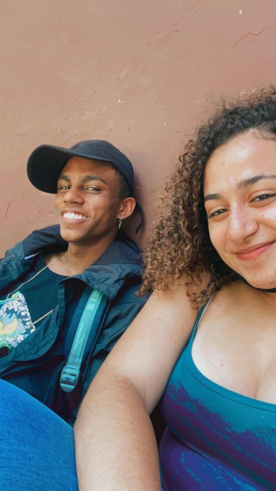

Sei que nem todas as fotos estão "bonitas" mas fiz com bastante carinho, não vão ser muitas fotos mas espero que goste, eu te amo, partiuu:
 Essa foi a primeirinha foto nossa juntos, foi ai que tudo começou =)
Essa foi a primeirinha foto nossa juntos, foi ai que tudo começou =)

Aaa essa foi nossa primeira fotinha na escola, e eu amop todas as lembranças da escola ctg..
Bom, esssa foto também é da primeira vez que saimos, confesso que estava um pouco nervoso de sair contigo pela primeira vez.
Essa é uma foto em um momento super aleatorio, eu lembro que fomos pro metro esperar sua mãe e ficamos conversando, confesso que tava afinzinho de você..
 Esse dia foi o que eu conheci sua vó aaaaa, lembro que nós comemos lanche e ficamos conversando num lugar la mó frio kkk, quero replay...
Esse dia foi o que eu conheci sua vó aaaaa, lembro que nós comemos lanche e ficamos conversando num lugar la mó frio kkk, quero replay...
Essa eu só posso dizer que é uma das minhas fotos preferidas, mostra um pouco da nossa parte descontraida, sempre que vejo ela fico muuuito feliz.